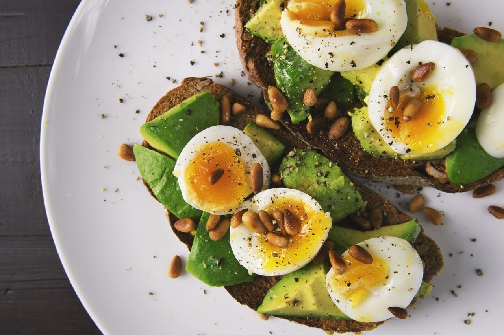
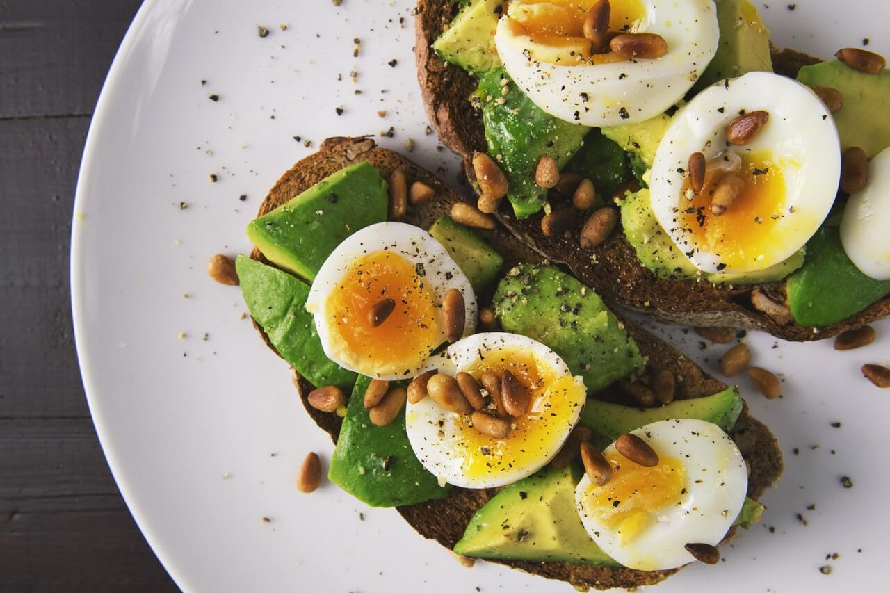

OM FOOD8
Food8 er en restaurationsgruppe af individuelle restauratører der har slået sig sammen. Her kan man gå på opdagelse blandt kendte og ukendte restauranter, madbutikker og barer – eller det, som vi ganske enkelt kalder steder.
Der vil altid være nye oplevelser og inspiration at hente på food8.dk. Vi samler nyheder, guides og bordbooking samme sted. Så har du allerede oplevet en af restauranter på food8, eller er der fuldt booket, så inspirerer vi dig til en anden god oplevelse. I det ugentlige nyhedsbrev kan du få historier, guides og nyheder om food8s steder.
Fælles for alle de steder, du finder på food8.dk er, at de er drevet af forskellige restauratører, som er gået sammen i en restaurationsgruppe for samlet at kunne tilbyde flere oplevelser.
Vil du i kontakt med os, så sig hej på info@food8.dk